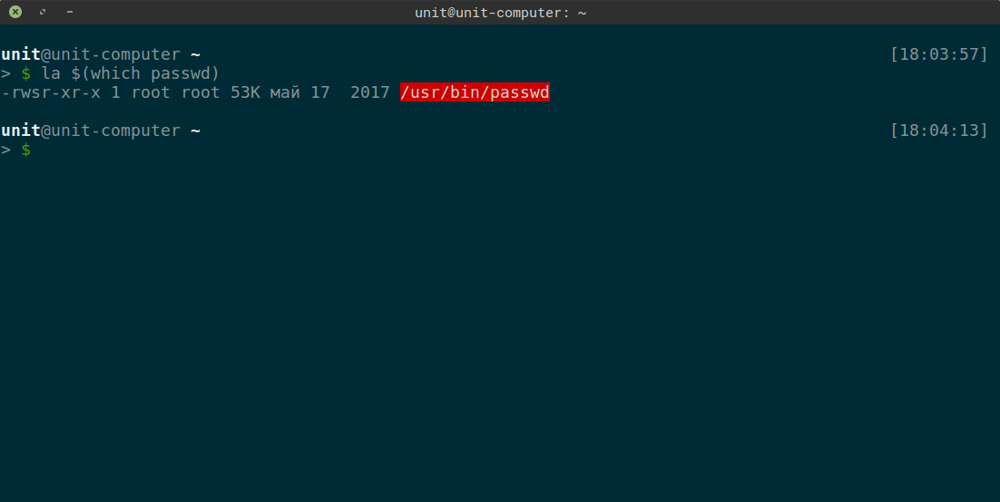
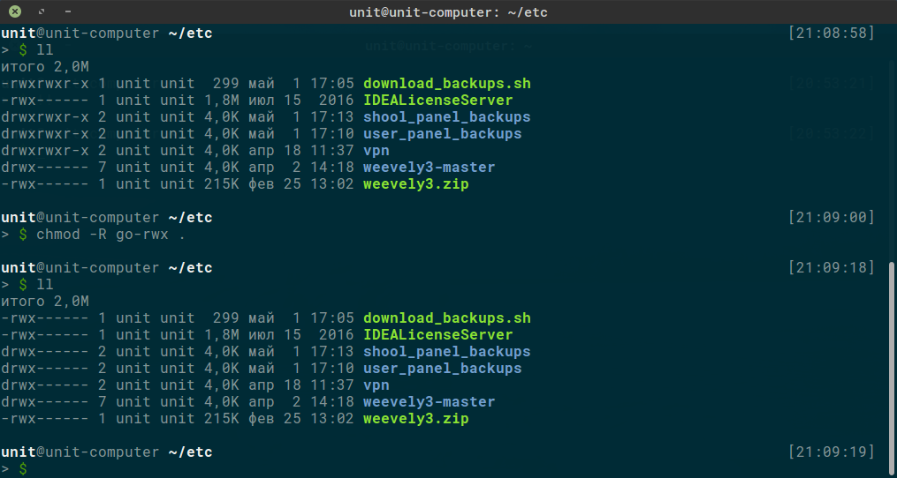
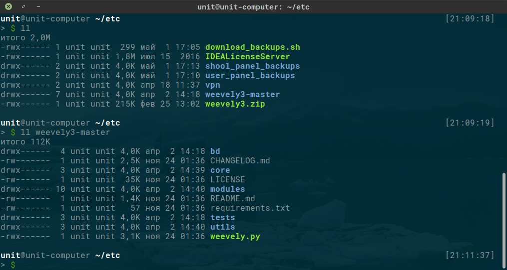
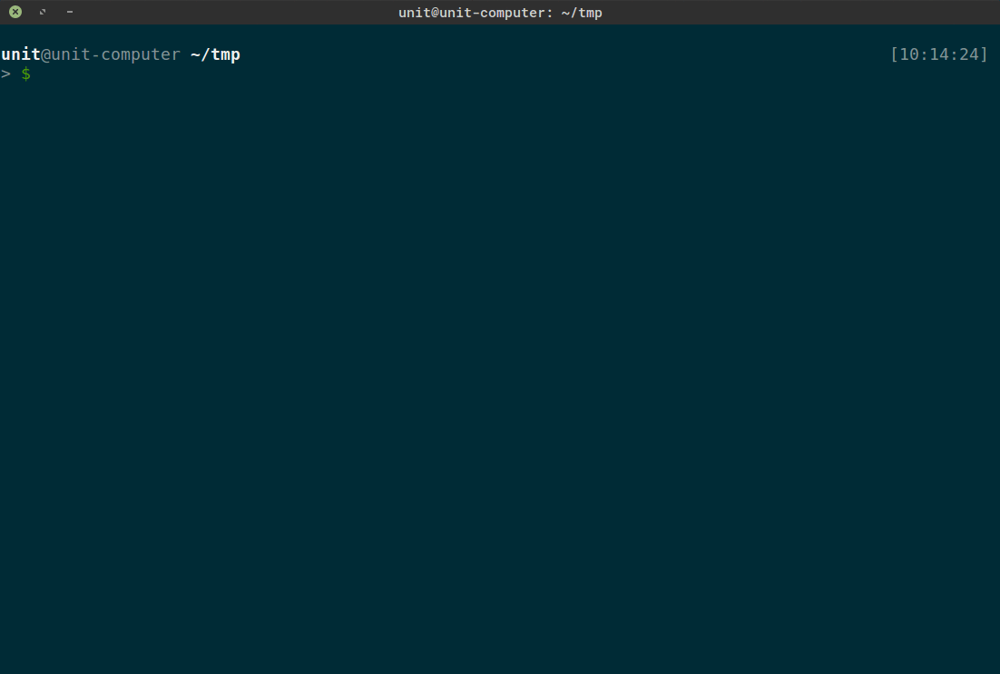
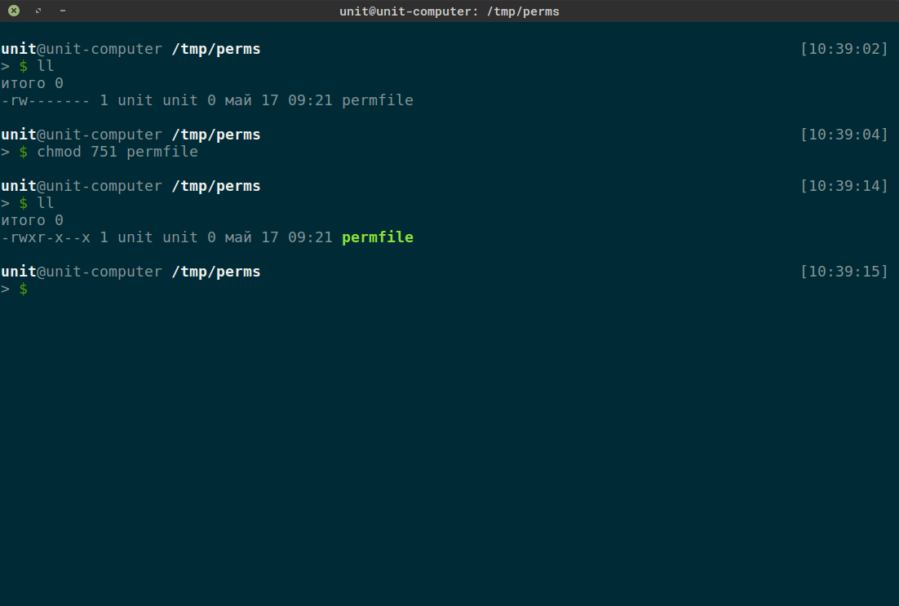
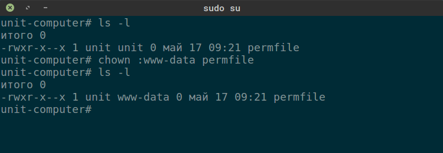
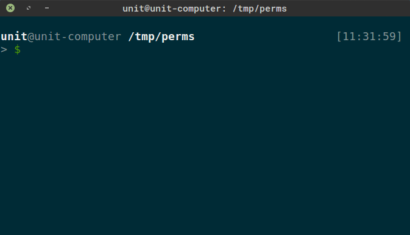

Сегодня разберемся с привелегиями пользователей. В любой ОС, да и не только, есть система прав и групп. В линукс при создании пользователя автоматически создается группа с именем этого пользователя и сам пользователь добавляется в свою группу. Можно посмотреть свои права и группы выполнив команду
вывод будет примерно таким
Тут мы видим id пользователя "uid (User ID)", ид группы "gid (Group ID)", а также список групп к которым принадлежит данный пользователь. А вот вывод этой команды из под рута
Все по нулям, что говорит нам о полном доступе к системе. Переключиться на рута или выполнить команду от рута, можно:
Очень хорошо о запуске команд от другого пользователя написано в этой статье, уж не стал копипастить и переводить.
Также список команд которыми ты можешь воспользоваться и какие софты юзать на машине определено группами, в которых состоит пользователь, и правами на файлы. В системе есть файл хранящий пароли пользователей, лежит он по пути "/etc/shadow". Для просмотра содержимого файла используется команда "cat"
Не получилось, да? Это потому, что на файл установлены права позволяющие читать и писать в него только владельцу и только читать на группу. Чтобы это увидеть можно воспользоваться командой "ls". Опять не получилось? Вывелся только путь? Не беда, как я уже говорил почти у каждой команды есть параметры, а узнать какие параметры принимает команда и что они делают можно 2-мя путями:
- Используя утилиту man. Выход из документации по нажатию "q".
$ man ls
- Используя параметры "-h/--help". Есть противные скрипты которые перекрывают параметр "-h" используя его в своих целях, но оставляют справку по ключу "--help", "ls" относится к таким.
$ ls -h
Очень важно уметь находить и читать документацию. Теперь ознакомившись с маном ты можешь выполнить команду "ls" правильно, я понимаю, что тебе лень каждый раз помнить и печатать пути, поэтому обратиться к истории команд тебе помогут, как это ни странно, клавиши вверх и вниз, а подставить ранее введенный параметр можно по шоткату <Alt+>>. Позже мы к этому вернемся.
А еще, если команда которую ты только что ввел, нужно запустить повторно из-под sudo то сделать можно так:
$ sudo !!Чтобы не вводить в заблуждение "!!" команда повтора предыдущей команды!
Права на файл "/etc/shadow"
Первая колонка (таблица выводимая "ls" разделяется пробелами) - права на файл, вторая - кол-во ссылок на файл, владелец, группа, размер (в байтах), дата последнего изменения и имя файла. Отсюда мы видим, что файл принадлежит пользователю "root" и группе "shadow". А теперь перейдем к самим правам "-rw-r-----". Кол-во тире всегда одинаковое, сами тире означают, что права не установлены, а каждая буква дает определенное право. Дели права по 3 черточки (бита). Первый бит определяет тип объекта:
-
- — обычный файл;
-
d — каталог;
-
b — файл блочного устройства;
-
c — файл символьного устройства;
-
s — доменное гнездо (socket);
-
p — именованный канал (pipe);
-
l — символическая ссылка.
В нашем случае - это файл. Далее идут права по 3 бита слева на право: владелец, группа, все остальные. Права обозначаются следующими буквами:
- r - право на чтение (read);
- w - право на запись (write);
- x - право на запуск (execute);
Таким образом первый набор бит ("rw-") дает владельцу файла ("root") право на чтение и запись данных в файл. Второй - ("r--") право на чтение всем, кто входит в группу "shadow". И третий - ("---") никаких прав никому не дает. С правами в линуксе следующая история, что не разрешено - значит запрещено. Таким образом прочитать файл "/etc/shadow" можно так:
Ты, как любой пользователь системы, можешь поменять себе пароль, просто запустив команду "passwd", и дважды введя новый пароль. И тут должен возникнуть любопытный вопрос: "Раз все пароли хранятся в /etc/shadow, а доступ на запись есть только у рута, то как я могу менять свой пароль с помощью passwd, ведь она запускается мной, а значит с моими правами?" Все верно, запускаемые скрипты и команды выполняются с привелегиями текущего пользователя и поэтому cat запущенный тобой не может прочитать файл shadow. А из-за необходимости давать обычным пользователям права которых у них не должно быть, были придуманы биты suid (Set User ID или смена идентификатора пользователя) и sgid (Set Group ID или смена идентификатора группы), которые на время запуска файла с таким битом предоставляют права владельца запускаемого файла. Посмотрим на права заданные для программы passwd

Обрати внимание на первый набор бит "rws", именно наличие бита "s" дает запускаемому процессу привелегии владельца файла и позволяет модифицировать файл с паролями, куда в обычной ситуации получить доступ нельзя.
Право suid считается потенциально опасным и неправильное его использование может вызвать проблемы. Например если бы passwd работал бы как sudo (без вопросов выполнял бы команды), то мы бы получили полный доступ к системе.
Для бита suid не предусмотрено отдельного места, поэтому это право перекрывает "x", причем если есть право на запуск, то - "s", если права на запуск нет, то -"S".
Таким образом одним из векторов повышения привелегий может стать поиск исполняемых файлов, которые запускаются от root и куда есть доступ на запись (заглянуть можно, например, в файлы cron).
Также ты можешь менять права на объекты, владельцем которых являешься, с помщью команды "chmod wXp /path/to", где:
w - указатель для кого устанавливаются права:
- u - для владельца
- g - для группы
- o - пользователи не входящие в группу
- a - для всех пользователей
X - указатель на модификатор:
- + - добавить право
- - - удалить право
- = - установить право
p - указатель на само право:
- r - чтение
- w - запись
- x - запуск
Вот несколько примеров использования команды chmod:
Предоставить всем пользователям право на выполнение:
Удалить право на чтение и запись для всех, кроме владельца файла:
Дать всем права на чтение, запись и выполнение:
Если опустить указание на то, кому предоставляется данное право, то подразумевается, что речь идет вообще обо всех пользователях, т. е. вместо
можно записать просто
Рекурсивное применение прав для текущей директории. Удалить права на чтение, выполнение и запись во все файлы и каталоги текущей директории:


Тоже самое можно сделать так:
При работе с правами можно лишиться привелегий, если удалить у себя право "x" на папку (все папки должны иметь это право для владельца). Ниже на гифке показан этот процесс.

Команду "find" разберем позже. Суть в том, что у директорий обязательно должно быть разрешение "x".
Можно задавать права через числовое представление этих прав. Т.е. каждое право имеет свое числовое представление:
- r - 4
- w - 2
- x - 1
- не давать никаких прав - 0
Чтобы предоставить права таким способом нужно сложить соответствующие цифры для каждого набора. Например: нам нужно чтобы запускать, писать и читать мог только владелец, читать и запускать участники группы, а все остальные только запускать. Тогда мы складываем 4+2+1=7 (r+w+x), 4+1=5 (r+x), 1=1 (x). В итоге просто пишем результаты для каждой группы слитно - 751.

Этот способ используется чаще, хотя мне больше нравится первый.
Еще одна команда которую рассмотрим сегодня - это "chown", которая позволяет менять владельца и группу. Синтаксис тут следующий: "chmod [OPTIONS] user:group /path/to", опции тут как у chmod с дополнениеями, например вместо пользователя:группы можно указать файл от которого эти параметры унаследуются.

Тут я поменял группу у файла и теперь все кто входит в группу "www-data" могут читать и запускать этот файл. Важно помнить что из под обычного пользователя ты не сможешь поставить владельца или группу к которой не принадлежишь.
